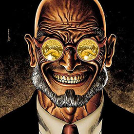
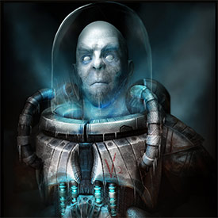
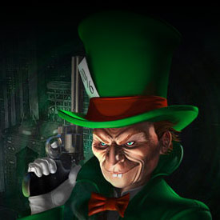

Dr. Hugo Strange

One of Batman's earliest villains, preceding even the Joker
and Catwoman, Dr. Hugo Strange is a brilliant but disturbed
psychologist who forms an obsessive vendetta against Batman.
He is also one of the few villains who have successfully
deduced that the Batman's real identity is Bruce Wayne.
Mr. Freeze

After his wife became terminally ill, Dr. Victor Fries
devoted his life to saving her and used cryogenics to
freeze her to get time to find a cure. After being
attacked by his boss Ferris Boyle and exposed to some
of his chemicals, Fries could only survive in sub-zero
temperatures and built a special suit to keep himself
alive, becoming Mr Freeze.
The Mad Hatter

Obsessed from a young age with Lewis Carroll's Alice in
Wonderland, Jervis Tetch, a skilled research scientist,
embraced a delusion that he was the incarnation of a
character in the story, the Mad Hatter. Using his
hypnotic skills for mesmerism, Tetch as the Mad
Hatter has committed many crimes, often themed
around the book that inspired him and his love
of hats and headgear.